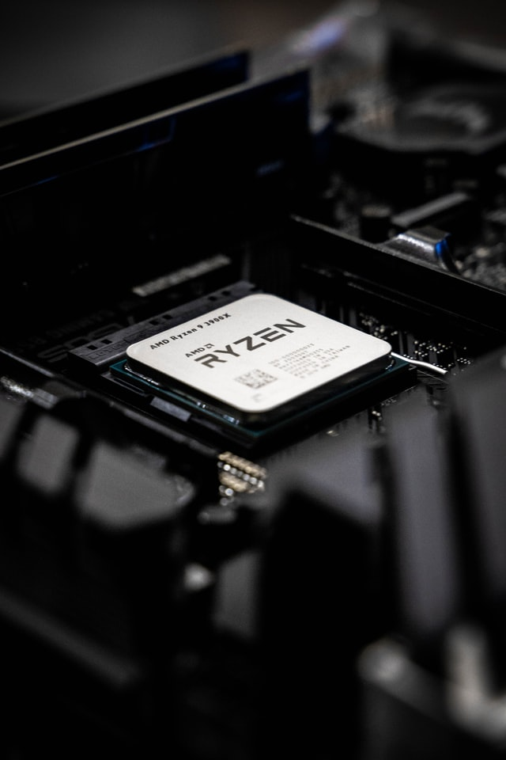

컴퓨터의 구조
하드웨어:껍데기
하드웨어는 컴퓨터의 연산장치(cpu), 기억장치(ram)와 같은 부품들을
통틀어서 부르는 말이다. 비유하자면 인간의 몸에 해당하는 부분이기
때문에 없어서는 안 되는 것이다. 하드웨어는 일반적으로 입력장치,
출력장치, 연산장치, 기억장치, 제어장치로 나눌 수 있지만 전원장치와
연결장치(케이블, 네트워크 장치 등)를 추가하여 나누기도 한다.
참고로 2010년대 즈음부터는 LED 튜닝이 활성화되어 지름신으로 부르고 있다.
cpu : iq(계산)

중앙 처리장치 라고도 불리는 cpu는 기억, 해석, 연산, 제어라는 4대 주요
기능을 관할하는 장치를 말한다. 프로그램의 명령어를 해석하여 데이터를
연산/처리를 하고 그렇게 돌아가도록 제어해주는 부분, 혹은 그 기능을
내장한 칩을 의미한다.
ram : 기억
Random Access Memory의 약자의 램은 사용자가 자유롭게 내용을 읽고
쓰고 지울 수 있는 기억장치로, 컴퓨터가 켜지는 순간부터 CPU는 연산을
하고 동작에 필요한 모든 내용이 전원이 유지되는 내내 이 기억장치에 저장된다.
'주기억장치'로 분류되며 보통 램이 많으면 한번에 많은 일을 할 수 있기때문에
'책상'에 비유되곤 한다.
메인보드 : 부품들을 연결해줌
컴퓨터에서 '혈관'정도의 역할을 하는 메인보드는 컴퓨터의 각 부품들을 하나로
연결해주는 회로와 밖으로 신호를 보낼 수 있는 출력 포트를 가지고 있는 부품이다.
조립이 끝난 컴퓨터 본체
완성된 컴퓨터